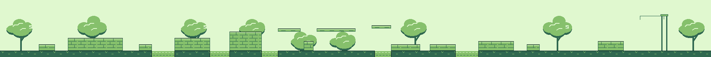

Olive grove art review
Final native verdict
Ready for human art review. The final candidate resolves the missing orchard through the middle of the level. No consequential art or text finding remains.
I inspected 22 final native frames across the entrance, both routes, the late channel, last patrol, bell garden, ringing and open bell states, and stage clear. The low canopy groups now connect the high route to the orchard below it. The added tree near the dry rejoin prevents the middle stretch from becoming a sequence of bare platforms. The ball stays distinct above the leaves, and the lower patrol remains readable against them.
The open sky around the late channel now reads as a deliberate clearing between planted sections. Stone landing edges remain clear at 160×144. The final bell has a clean backdrop, and its green state communicates the hit. The ending frame restores a tree beside the gate. Caption removal leaves room for play, while the short clear dialog still explains the next stage and continuation button.


The final indexed source measures 1760×144 pixels and 116 exact 8×8 tiles. This count describes source reuse, not compiled allocation. The new placements reuse the existing tree shapes. Approved Kittie and cover work was outside the requested change.
Evidence: final candidate verification and native PNGs under courtyard/artifacts/grove-review-2-frames/. Main ROM SHA-256 08d2d326f59b1c0f2f86c9c1e9c60b79329e8d19dbf77190699826d1c7f05e7d. Practice ROM SHA-256 1d31b280f5b1de9601c65598b6884cf42da8e2db7b1bd1cb60f08aed0a2f7d00. This verdict concerns the whole level's presentation in retained native stills. Independent gameplay, motion and hardware judgments remain separate.
Earlier reviews and resolved findings
Candidate 1 native review
One art revision remains before sign-off. The new stonework, ground texture, caption removal and clear bell backdrop pass. The optional high route and following watercourse lose the orchard setting for several screens. Add restrained olive foliage through that middle stretch, then review the affected native frames.
I inspected 21 genuine candidate frames from screens 1 through 10, including the high ball route, late channel, patrol approach, perch pickup and deliberate bell miss with recovery. Trees render correctly in screens 2 through 4 and 9. This is a composition issue: the generator places no trees between x592 and x1344, and the last crown ends near x672.
The three high platforms read as floating green strips against blank sky. A reusable tree group below or around those platforms can establish the branch route while leaving its ball against open sky. Add another tree near the dry rejoin. Keep the channel's takeoff and landing edges clear, and preserve the open final bell target. No geometry or Kittie change is needed.


This review covers still-image presentation. The builder owns runtime recovery, route completion and final clear checks. A clear or bell-hit result has not yet been reviewed here.
Initial review retained for context
Initial review, 2 October 2026. Keep the broad stone terraces, clear blue channels and open jump space. Replace the repeated tree stamp and instructional captions with a more varied orchard. Difficulty can rise while landing edges stay easy to read.
What matters most
- Remove
OLIVE GROVE,WOOL ABOVEandONE LAST LOBfrom the background. The stage selector supplies the name. The ball and the hanging bell already show the opportunities. Do not replace these captions with arrows or more signs. The clear dialog can keep its useful destination and A-to-continue instruction. - Give the orchard a rhythm. The generator places the same six-lobed tree every 160 pixels. Use two or three reusable canopy arrangements, with asymmetrical crowns, a few bent trunks and uneven spacing. Broader open sky over the channels should separate those crossings from the denser orchard approach. Frame the final garden with trees at its sides.
- Make texture describe materials. Replace the canopy's evenly scattered diagonal dashes with a few connected leaf clusters, a coherent upper highlight and a restrained underside shadow. Keep background foliage softer than the player outline. Preserve the stone's dark landing edge and thin highlight, but break up its ruler-straight interior mortar with a small reusable family of stone faces. The green floor currently repeats masonry lines; a quiet earth band with sparse grass roots would distinguish ground from terraces. Avoid random speckling.
- Protect the few pixels that explain a decision. Keep tree trunks and dense foliage away from ball, patrol silhouettes and platform endpoints. The final bell hangs beside a tree whose crown and trunk overlap the gate apparatus. Open the canopy around the bell and its cable so the target reads immediately. Decorative baskets need a weaker contour than solid terrain, or can be removed if they resemble tiny steps.
The optional high route should keep the same solid-top language as the terraces below. A different material is unnecessary unless the geometry needs it. Use tree placement to distinguish the upper route without hiding the lower lane or adding decorative shapes that resemble platforms.
The designer's irrigation ascent fits this direction. Leave clean space around the three short high ledges and the rising late channel. Give the final raised ball perch and y56 bell a clear backdrop. With three physical balls, the few pink pickups deserve stronger separation from foliage than incidental orchard props.
Native evidence
These genuine 160×144 emulator frames establish the existing grove's palette and spatial readability. The first two come from retained session 5bdd378f, frames 1800 and 2400. They predate the final Kittie face and HUD revision. The third is the later courtyard integration build's grove-clear frame. None is evidence of the proposed revision.


Source audit and implementation limits
The strip below links to the evolving indexed source PNG, not runtime color or gameplay. The pre-revision source had 96 exact 8×8 source tiles and four import colors. That is a baseline, not a compiled budget guarantee. Build the revised textures from reusable tiles, retain the current palette families where possible, and verify final attributes and compiled usage after import.

make_grove.py calls make_world_art.build("grove"). Revise that grove path only. The shared generator's banquet path still contains old windows and captions that differ from the approved banquet output. Running its top-level entry point would regenerate unrelated assets. The current banquet PNG and approved runtime evidence remain authoritative.
grove-contact.png and grove-playthrough.gif contain an older grove layout and obsolete captions. They are genuine historical captures, but should not represent the current candidate. The original front and side photographs in the owner's character folder were reviewed. Preserve approved Kittie, carry, cuddle, paws and cover without changes.
Review after implementation
Request native frames across all eleven screens, including both routes, a crowded patrol crossing, the bell before and after a hit, and the exit. Inspect at 1× and integer zoom, with the actual HUD and camera. Confirm that foliage never disguises landing edges, water, ball or the bell. The initial review used retained evidence while the coordinator resolved the project's runtime connection. Candidate-specific findings appear at the top of this report.